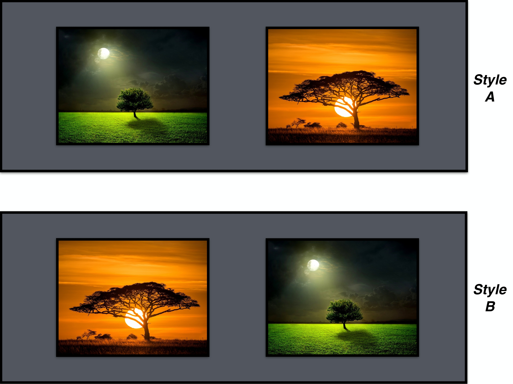
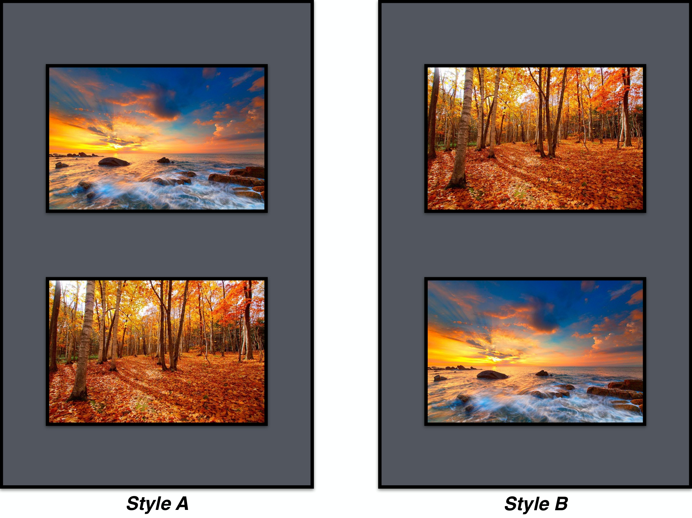

<!doctype html>
<html lang="ja">
  <head>
    <meta charset="UTF-8" />
    <title>美術鑑賞における画像とその配置への好ましさに関する研究</title>
    <script src="jspsych/dist/jspsych.js"></script>
    <script src="jspsych/dist/plugin-html-keyboard-response.js"></script>
    <script src="jspsych/dist/plugin-html-button-response.js"></script>
    <script src="jspsych/dist/plugin-image-button-response.js"></script>
    <script src="jspsych/dist/plugin-survey-multi-choice.js"></script>
    <script src="https://unpkg.com/@jspsych-contrib/plugin-pipe"></script>
    <link rel="stylesheet" href="jspsych/dist/jspsych.css" />
    <style>
      /* すべてのフォントを Zen Maru Gothic に統一 */
      @font-face {
        font-family: "Zen Maru Gothic";
        src: url("fonts/ZenMaruGothic-Regular.ttf") format("truetype");
        font-weight: normal;
      }
      @font-face {
        font-family: "Zen Maru Gothic";
        src: url("fonts/ZenMaruGothic-Bold.ttf") format("truetype");
        font-weight: bold;
      }

      body,
      html,
      * {
        font-family: "Zen Maru Gothic", sans-serif !important;
      }

      img {
        height: 600px !important;
        display: block;
        margin: auto;
      }

      .center-container {
        display: flex;
        justify-content: center;
        align-items: center;
        min-height: 100vh;
        flex-direction: column;
      }

      .left-align {
        text-align: left;
        max-width: 600px;
      }

      h3 {
        text-align: center;
      }

      /* informedConsent 内の h3 を下線付きにする */
      .consent-wrapper h3 {
        text-decoration: underline;
      }

      /* 最終 h3（■ 以下の項目…）だけは下線を消す */
      .consent-wrapper h3.no-underline {
        text-decoration: none !important;
      }

      /* 認証画面の「次へ」ボタン */
      #authNextBtn {
        background-color: #fff; /* 白背景 */
        color: #333; /* 文字色 */
        border: 1px solid #ccc; /* 枠線 */
        border-radius: 4px;
        padding: 5px 15px;
        font-size: 16px;
        cursor: pointer;
      }

      #authNextBtn:hover {
        background-color: #dddddd; /* ホバー時わずかにグレー */
      }

      input[type="number"]::-webkit-inner-spin-button,
      input[type="number"]::-webkit-outer-spin-button {
        -webkit-appearance: none;
        margin: 0;
      }

      input[type="number"] {
        -moz-appearance: textfield;
      }

      input::placeholder {
        color: #aaa;
      }

      /* --- 年齢・性別画面の次へボタンを白背景＋枠付きに統一 --- */
      #nextBtn {
        background-color: #fff; /* 白背景 */
        color: #333; /* 文字色 */
        border: 1px solid #ccc; /* 枠線 */
        border-radius: 4px;
        padding: 5px 15px;
        font-size: 16px;
        cursor: pointer;
      }

      #nextBtn:hover {
        background-color: #dddddd; /* ホバー時わずかにグレー */
      }

      /* 「*印がある項目は、回答が必須です。」の中央揃え */
      .required-note {
        text-align: center;
        color: inherit;
        font-weight: normal;
      }

      .required-note span {
        color: #8b0000;
        font-weight: normal;
      }

      .sd-container {
        display: grid;
        grid-template-columns: 1fr 1fr;
        gap: 2rem;
        width: 100%;
        align-items: flex-start !important;
      }

      .sd-left-column {
        display: flex;
        flex-direction: column;
        align-items: center;

        height: 500px !important;

        align-self: flex-start !important;
        /* ★ 削除 → 揺れの原因だった */
        /* min-height: 100vh; */
      }

      .sd-right-column {
        display: flex;
        flex-direction: column;
        align-items: center;
        width: 100%;
        position: sticky;
        top: 20px;
        align-self: flex-start !important;
      }

      .sd-image {
        max-width: 600px;
        max-height: 500px;
        width: auto;
        height: auto;
        display: block;
        margin: 0 auto 1rem auto;
        object-fit: contain;
      }

      .vas-row {
        display: flex;
        align-items: center;
        justify-content: flex-start;
        margin: 0.8rem 0;
        position: relative;
        flex-wrap: nowrap;
      }

      .vas-left-label,
      .vas-right-label {
        width: 80px;
        white-space: nowrap;
        font-size: 0.95rem;
        line-height: 32px;
        text-align: center;
      }

      .vas-slider-wrapper {
        position: relative;
        width: 440px;
        margin: 0 10px;
        display: flex;
        align-items: center;
      }

      .center-tick {
        position: absolute;
        left: 50%;
        top: 50%;
        transform: translate(-50%, -50%);
        width: 2px;
        height: 32px;
        background: #333;
      }

      .vas-slider {
        width: 100%;
        -webkit-appearance: none;
        appearance: none;
        height: 32px;
        background: transparent;
        margin: 0;
        padding: 0;
      }

      .vas-slider::-webkit-slider-runnable-track {
        height: 6px;
        background: #d9d9d9;
        border-radius: 3px;
      }
      .vas-slider::-moz-range-track {
        height: 6px;
        background: #d9d9d9;
        border-radius: 3px;
      }

      .vas-slider::-webkit-slider-thumb {
        -webkit-appearance: none;
        width: 18px;
        height: 18px;
        border-radius: 50%;
        background: #333;
        margin-top: -6px;
        cursor: pointer;
      }
      .vas-slider::-moz-range-thumb {
        width: 18px;
        height: 18px;
        border-radius: 50%;
        background: #333;
        cursor: pointer;
      }

      .vas-center {
        display: none;
      }

      @media (max-width: 800px) {
        .sd-container {
          grid-template-columns: 1fr;
        }
        .sd-left-column,
        .sd-right-column {
          width: 100%;
        }
        .sd-image {
          max-width: 100%;
        }
        .vas-slider-wrapper {
          width: 90%;
        }
      }
    </style>
  </head>

  <body></body>
  <script>
    const jsPsych = initJsPsych();

    const subjectID = jsPsych.randomization.randomID(10);
    let participantID = null; // 通常完了者のみ後で入る
    const filename = () => `${participantID}_${subjectID}.csv`;
    const filenameNotConsented = `non-consented_${subjectID}.csv`;

    // ======================
    // 認証コード入力画面（一致・不一致のみ判定）
    // ======================
    const authScreen = {
      type: jsPsychHtmlKeyboardResponse,
      stimulus: `
      <div class="center-container">
        <div class="left-align">
          <h3>研究参加のために認証コードを入力してください。</h3>
          <p>入力の際は、半角アルファベット・半角数字を使用してください。<br>コードが正常に確認できましたら、次の画面へ移動します。</p>
          <input id="authInput" type="text" placeholder="コードを入力"
            style="width: 200px; height: 25px; font-size: 16px; display: block; margin: 0 auto;" />
          <div style="text-align: center; margin-top: 20px;">
            <button id="authNextBtn">次へ</button>
          </div>
        </div>
      </div>
    `,
      choices: "NO_KEYS",

      on_load: function () {
        const authInput = document.getElementById("authInput");
        const nextBtn = document.getElementById("authNextBtn");

        nextBtn.addEventListener("click", function () {
          const code = authInput.value.trim();

          // --- 認証コード一致判定（未入力も不一致扱い） ---
          if (code !== "dmp937402") {
            alert(
              "認証コードが正しくありません。ご確認のうえ、再度ご入力ください。",
            );
            authInput.value = ""; // 入力欄リセット
            return; // そのまま画面に留まる
          }

          // --- 一致時：次画面へ ---
          jsPsych.finishTrial({ response: code });
        });
      },
    };

    const introWarning = {
      type: jsPsychHtmlButtonResponse,
      stimulus: `
          <style>
          .consent-wrapper {
            padding-left: 30px;
            padding-right: 30px;
            text-align: left;
          }
          .consent-wrapper h3 {
            text-align: left !important;
          }
          </style>
          <div class="consent-wrapper">
            <h2 style="text-align: center; color: red;">実験参加時の注意点</h2>
              <p>本研究では、調査・実験を行うにあたりPCを使用します。ウィンドウを最大化できましたら、研究概要の説明へ進んでください。
                <br>ウィンドウは、<b>実験終了</b>まで<b>最大化</b>した状態にしてください。</p>
              <p>実験中は、<b>ブラウザの読み込みを行わない</b>ようご注意ください。すべての回答がリセットされ、最初の画面から再度回答していただくことになります。
                <br>ご使用のインターネット環境が安定した状態であることをご確認のうえ、実験にご参加ください。</p>
          </div>
        `,
      choices: ["調査へ進む"],
    };

    const questionsIC = [
      { prompt: "研究の意義、目的、方法など", name: "consent_1" },
      { prompt: "研究成果の公表の可能性", name: "consent_2" },
      {
        prompt: "収集するデータの種類、収集方法、期間、所要時間など",
        name: "consent_3",
      },
      { prompt: "対象者に選ばれた理由", name: "consent_4" },
      {
        prompt:
          "研究に参加することにより予測される対象者にとって、また社会にとっての利益",
        name: "consent_5",
      },
      { prompt: "個人情報の保管・管理方法、廃棄について", name: "consent_6" },
      { prompt: "研究への参加は任意であること", name: "consent_7" },
      {
        prompt: "参加に同意しない場合もいかなる不利益を受けないこと",
        name: "consent_8",
      },
      {
        prompt: "同意はいつでも不利益を受けずに撤回できること",
        name: "consent_9",
      },
    ];

    const informedConsent = {
      type: jsPsychSurveyMultiChoice,
      preamble: `<style>
          .consent-wrapper {
            padding-left: 30px;
            padding-right: 30px;
            text-align: left;
          }
          .jspsych-survey-multi-choice-question {
            padding-left: 30px !important;
            padding-right: 30px !important;
            text-align: left !important;
          }
          .jspsych-survey-multi-choice-horizontal .jspsych-survey-multi-choice-option {
            margin-left: 30px;
          }
          .consent-wrapper h3 {
            text-align: left !important;
          }
          </style>
          <div class="consent-wrapper">
            <h2 style="text-align: center;">美術鑑賞における画像とその配置への好ましさに関する研究</h2>
              <h3 style="padding-top: 5em;">1.　この研究について</h3>
                <h4>(1)　研究の意義、目的、方法など</h4>
                  <p>　本研究は、みなさんの画像とその配置への好ましさを調べるものです。この研究により、人間に特有の美的感覚のメカニズムに関する手がかりが得られる可能性があります。</p>
                <h4>(2)　研究成果の公表の可能性</h4>
                  <p>　この研究で得られた成果は、国内外の学術大会や研究雑誌にて発表される可能性があります。データには統計的な処理が行われるため、成果の公表に際して個人が特定されることはありません。また、他の研究者が本研究の結果を検証できるよう、データを匿名化したうえで公表する場合もあります。</p>
                <h4>(3)　収集するデータの種類、収集方法、期間、所要時間など</h4>
                  <p>　この研究では、PC上で主に2種類のデータを収集いたします。1点目に、いくつかの質問項目にご回答いただくことで得られる調査データです。2点目に、実験で提示される画像を選択していただくことで得られる実験データです。データの収集は1回のみで、2026年月2月頃に行われます。研究参加にかかる所要時間はおよそ40分です。</p>
                <h4>(4)　対象者に選ばれた理由</h4>
                  <p>　この研究では、日本語母語話者のうち、20～65歳の方を対象に研究協力者を募集することにしました。</p>
                <h4>(5)　研究に参加することにより予測される対象者にとって、また社会にとっての利益</h4>
                  <p>　この研究の実施によって、主に美術鑑賞における美的感覚のメカニズムに関する手がかりが得られることが期待されます。</p>
              <h3 style="padding-top: 5em;">2.　個人データの取り扱いについて</h3>
                <p>　得られたデータは成果公表後、最低10年間保管され、その後破棄されます。データは、インターネットに接続されないPCにてパスワードを設定したうえで保管します。また、得られたデータはすべて匿名であり、個人情報を特定する情報は含まれませんのでご安心して研究にご参加いただけます。</p>
              <h3 style="padding-top: 5em;">3.　研究への参加について</h3>
                <p>　本研究への参加は任意であり、参加に同意しない場合でも問題ありません。また、同意は研究実施期間中であればいつでも不利益を受けずに撤回できます。</p>
              <h3 class="no-underline" style="padding-top: 5em;">■ 以下の項目について理解できたかどうか、当てはまる選択肢にチェックを付けてください。</h3>
          </div>`,
      questions: questionsIC
        .map((q, idx) => ({
          prompt: `<b>${idx + 1}.</b>　${q.prompt}`,
          name: q.name,
          options: ["はい", "いいえ"],
          required: true,
        }))
        .concat([
          {
            prompt:
              "<span style='font-size: 1.17em; font-weight: bold; margin-top: 5em; display: inline-block;'>■ 調査趣旨を理解したうえで、あなたはこの研究に参加することに同意しますか？</span>",
            name: "consent_final",
            name: "consent_final",
            options: ["はい", "いいえ"],
            required: true,
          },
        ]),
      button_label: "次へ",
      on_load: () => {
        const el = document.getElementById("emailConsent");
        if (el) el.textContent = "iimurashuhei" + "@" + "gmail.com";
      },
    };

    const saveDataNotConsented = {
      type: jsPsychPipe,
      action: "save",
      experiment_id: "＿＿＿", // DataPipeよりIDを取得
      filename: filenameNotConsented,
      data_string: () => jsPsych.data.get().csv(),
    };

    let shouldEndNotConsented = false;

    const endIfNotConsented = {
      timeline: [
        {
          type: jsPsychHtmlButtonResponse,
          stimulus: `
              <h3>研究への参加に同意されなかったため、ここで終了します。</h3>
                <p>ボタンを押して回答を送信し、完了するまでそのままお待ちください。</p>
              `,
          choices: ["回答を送信"],
        },
        saveDataNotConsented,
        {
          type: jsPsychHtmlKeyboardResponse,
          stimulus: `
              <h3>回答の送信が正常に完了しました。</h3>
                <p>研究へのご協力ありがとうございました。</p>
                <p>タブを閉じると終了できます。</p>
              `,
          choices: "NO KEYS",
          on_load: () => {
            const el = document.getElementById("emailNotConsented");
            if (el) el.textContent = "iimurashuhei" + "@" + "gmail.com";
          },
        },
      ],
      conditional_function: function () {
        return shouldEndNotConsented;
      },
    };

    const informedConsentCheck = {
      ...informedConsent,
      data: { consent_type: "check" },
      on_finish: function (data) {
        if (data.response.consent_final === "いいえ") {
          shouldEndNotConsented = true;
        } else {
          const hasNo = questionsIC.some(
            (q) => data.response[q.name] !== "はい",
          );
          if (hasNo) {
            alert(
              "「いいえ」を選択した項目がある一方で、研究への参加に「同意する」と回答しています。ご理解いただいているか再確認のうえ、再度ご回答ください。",
            );
          }
        }
      },
    };

    const consentLoop = {
      timeline: [informedConsentCheck, endIfNotConsented],
      loop_function: function () {
        const consentTrials = jsPsych.data
          .get()
          .filter({ consent_type: "check" })
          .values();
        if (consentTrials.length === 0) return false;

        const lastConsent =
          consentTrials[consentTrials.length - 1].response || {};

        if (shouldEndNotConsented) return false;

        const hasNo = questionsIC.some((q) => lastConsent[q.name] !== "はい");
        return hasNo;
      },
    };

    const afterImformedConsentCheck = {
      timeline: [
        endIfNotConsented,
        {
          timeline: [consentLoop],
          conditional_function: function () {
            const consentTrials = jsPsych.data
              .get()
              .filter({ consent_type: "check" })
              .values();
            if (consentTrials.length === 0) return false;

            const resp = consentTrials[consentTrials.length - 1].response || {};
            if (shouldEndNotConsented) return false;

            return questionsIC.some((q) => resp[q.name] !== "はい");
          },
        },
      ],
    };

    // ======================
    // イントロ画面
    // ======================
    const surveyIntro = {
      type: jsPsychHtmlButtonResponse,
      stimulus: `
          <h3>調査セクションへ進みます。</h3>
          <p>各項目について回答してください。</p>
        `,
      choices: ["調査へ進む"],
    };

    // ======================
    // 年齢・性別入力画面
    // ======================
    const demographics = {
      type: jsPsychHtmlKeyboardResponse,
      stimulus: `
          <div class="center-container">
            <div class="left-align">
              <h3>下記のことについて教えてください。</h3>
              <p class="required-note"><span>*</span>印がある項目は回答が必須です。</p>

              <p><b>参加者ID</b><span style="color:#8B0000;">*</span>（半角数字を使用し、4桁の数字を入力してください）</p>
              <div style="display: flex; align-items: center;">
                <input id="idInput" type="text" inputmode="numeric" placeholder="例：1234"
                  style="width: 100px; height: 25px; font-size: 16px;" maxlength="4"/>
              </div>

              <p><b>年齢</b>（半角数字を使用し、20以上66以下の整数で入力してください）</p>
              <div style="display: flex; align-items: center;">
                <input id="ageInput" type="text" inputmode="numeric" placeholder="例：20"
                  style="width: 100px; height: 25px; font-size: 16px;" maxlength="2"/>
                <span style="margin-left: 5px; font-size: 16px;">歳</span>
              </div>

              <p><b>性別</b>（選択したボタンを再度押すと、選択解除が可能です）</p>
              <div style="text-align: left; margin-top: 5px;">
                <label><input type="radio" name="gender" value="1"> 男性</label><br>
                <label><input type="radio" name="gender" value="2"> 女性</label><br>
                <label><input type="radio" name="gender" value="3"> その他</label>
              </div>

              <div style="text-align: center; margin-top: 20px;">
                <button id="nextBtn">次へ</button>
              </div>
            </div>
          </div>
        `,
      choices: "NO_KEYS",
      on_finish: function (data) {
        // 通常完了ルートに入った参加者のみ
        participantID = data.response.id;
      },
      on_load: function () {
        const idInput = document.getElementById("idInput");
        const ageInput = document.getElementById("ageInput");
        const nextBtn = document.getElementById("nextBtn");

        let composing = false;

        function convertFullwidthDigits(str) {
          return str.replace(/[０-９]/g, (s) =>
            String.fromCharCode(s.charCodeAt(0) - 0xfee0),
          );
        }

        function convertAndPreserveCursor(el) {
          const oldValue = el.value;
          const oldSelectionStart = el.selectionStart;
          const oldSelectionEnd = el.selectionEnd;

          const newValue = convertFullwidthDigits(oldValue);
          if (newValue === oldValue) return;

          el.value = newValue;
          try {
            el.setSelectionRange(oldSelectionStart, oldSelectionEnd);
          } catch (e) {
            el.selectionStart = el.selectionEnd = el.value.length;
          }
        }

        [idInput, ageInput].forEach((input) => {
          input.addEventListener("compositionstart", function () {
            composing = true;
          });
          input.addEventListener("compositionend", function () {
            composing = false;
            convertAndPreserveCursor(input);
          });
          input.addEventListener("input", function () {
            if (composing) return;
            convertAndPreserveCursor(input);
            // ID 4桁超過防止
            if (input.id === "idInput" && input.value.length > 4) {
              input.value = input.value.slice(0, 4);
            }
            // 年齢 2桁超過防止
            if (input.id === "ageInput" && input.value.length > 2) {
              input.value = input.value.slice(0, 2);
            }
          });
        });

        // --- 性別ラジオボタンを「再クリックで解除可能」にする ---
        const genderInputs = document.querySelectorAll('input[name="gender"]');
        genderInputs.forEach((input) => {
          input.addEventListener("click", function () {
            if (this.dataset.wasChecked === "true") {
              this.checked = false;
              this.dataset.wasChecked = "false";
            } else {
              genderInputs.forEach((x) => (x.dataset.wasChecked = "false"));
              this.dataset.wasChecked = "true";
            }
          });
        });

        // --- ボタン押下時のチェック ---
        nextBtn.addEventListener("click", function () {
          let idValue = idInput.value.trim();
          let ageValue = ageInput.value.trim();
          let genderValue = "";
          for (let g of genderInputs) {
            if (g.checked) genderValue = g.value;
          }

          // ID 必須チェック
          // ID 必須チェック
          if (idValue === "") {
            alert("参加者IDを入力してください。");
            return;
          }
          // 半角数字4桁チェック
          if (!/^\d{4}$/.test(convertFullwidthDigits(idValue))) {
            alert("参加者IDは半角数字を使用し、4桁の数字を入力してください。");
            idInput.value = ""; // 不適切入力時にリセット
            return;
          }

          // ID 正常 -> 年齢・性別チェック（既存コードを一切変更せずに実行）
          ageValue = convertFullwidthDigits(ageValue);

          const ageEmpty = ageValue === "";
          const genderEmpty = genderValue === "";

          if (ageEmpty || genderEmpty) {
            const confirmMsg =
              "未回答の項目があります。次のページに進んでよろしいですか。進む場合は「OK」、回答に戻る場合は「キャンセル」を選択してください。";
            const ok = window.confirm(confirmMsg);
            if (!ok) return;

            if (!ageEmpty && genderEmpty) {
              if (!/^\d+$/.test(ageValue)) {
                alert(
                  "年齢は半角数字を使用し、20以上66以下の整数で入力してください。",
                );
                ageInput.value = "";
                return;
              }
              const ageNum = parseInt(ageValue, 10);
              if (!Number.isInteger(ageNum) || ageNum < 20 || ageNum > 66) {
                alert(
                  "年齢は半角数字を使用し、20以上66以下の整数で入力してください。",
                );
                ageInput.value = "";
                return;
              }
              jsPsych.finishTrial({
                response: { id: idValue, age: ageNum, gender: genderValue },
              });
              return;
            } else {
              const ageToSave = ageEmpty
                ? ""
                : /^\d+$/.test(ageValue)
                  ? parseInt(ageValue, 10)
                  : "";
              jsPsych.finishTrial({
                response: { id: idValue, age: ageToSave, gender: genderValue },
              });
              return;
            }
          }

          if (!/^\d+$/.test(ageValue)) {
            alert(
              "年齢は半角数字を使用し、20以上66以下の整数で入力してください。",
            );
            ageInput.value = "";
            return;
          }

          const ageNum = parseInt(ageValue, 10);
          if (!Number.isInteger(ageNum) || ageNum < 20 || ageNum > 66) {
            alert(
              "年齢は半角数字を使用し、20以上66以下の整数で入力してください。",
            );
            ageInput.value = "";
            return;
          }

          jsPsych.finishTrial({
            response: { id: idValue, age: ageNum, gender: genderValue },
          });
        });
      },
    };

    // ======================
    // HSP質問紙
    // ======================
    const questionsHSP = [
      { prompt: "生活に変化があると混乱しますか？", name: "hsp_1" },
      { prompt: "強い刺激に圧倒されやすいですか？", name: "hsp_2" },
      { prompt: "他人の気分に左右されますか？", name: "hsp_3" },
      {
        prompt: "短時間にしなければならないことが多いとオロオロしますか？",
        name: "hsp_4",
      },
      {
        prompt:
          "競争場面や見られていると、緊張や動揺のあまり、いつもの力を発揮できなくなりますか？",
        name: "hsp_5",
      },
      {
        prompt:
          "大きな音や雑然とした光景のような強い刺激がわずらわしいですか？",
        name: "hsp_6",
      },
      { prompt: "大きな音で不快になりますか？", name: "hsp_7" },
      {
        prompt:
          "明るい光や強いにおい、ごわごわした布地、近くのサイレン音などにゾッとしやすいですか？",
        name: "hsp_8",
      },
      {
        prompt: "微細で繊細な香り・味・音・芸術作品などを好みますか？",
        name: "hsp_9",
      },
      { prompt: "美術や音楽に深く感動しますか？", name: "hsp_10" },
    ];

    const choicesHSP = [
      "非常にあてはまる",
      "かなりあてはまる",
      "ややあてはまる",
      "どちらともいえない",
      "あまりあてはまらない",
      "ほとんどあてはまらない",
      "まったくあてはまらない",
    ];

    // shuffle して required: false にする（必須解除）
    // 表示上だけ 1〜10 の番号を付与する
    const shuffledQuestionsHSP = jsPsych.randomization
      .shuffle(questionsHSP)
      .map((q, idx) => ({
        prompt: `<b>${idx + 1}.</b>　${q.prompt}`, // ★ 表示番号
        name: q.name, // ★ 保存順のための元の name は変更しない
        options: choicesHSP,
        required: false,
      }));

    const hsp = {
      type: jsPsychSurveyMultiChoice,
      questions: shuffledQuestionsHSP,
      preamble: `<h3>これらの項目について、あなた自身にもっとも当てはまると思う選択肢を選んでください。</h3>
          <p>（選択したボタンを再度押すと、選択解除が可能です）</p>`,
      button_label: "次へ",
      // on_load: ボタンのクリックを捕まえて手動で未回答チェックを行う
      on_load: function () {
        // --- HSP の全ラジオボタンに「再クリックで選択解除」を追加 ---
        const allHspRadios = document.querySelectorAll(
          '.jspsych-survey-multi-choice-question input[type="radio"]',
        );

        allHspRadios.forEach((r) => {
          r.addEventListener("click", function () {
            // すでに選択済みのものをクリックしたら解除
            if (this.dataset.wasChecked === "true") {
              this.checked = false;
              this.dataset.wasChecked = "false";
            } else {
              // 他のラジオのチェック状態を初期化
              const name = this.name;
              const sameGroup = document.querySelectorAll(
                `input[name="${name}"]`,
              );
              sameGroup.forEach((x) => (x.dataset.wasChecked = "false"));
              this.dataset.wasChecked = "true";
            }
          });
        });

        // submit ボタン要素を取得（プラグインが描画したボタン）
        const submitBtn = document.querySelector(
          ".jspsych-survey-multi-choice button[type='submit'], .jspsych-btn",
        );
        // safety: もし複数候補ある場合は最初のものを使う
        if (!submitBtn) return;

        // 対象となる質問配列（name を参照するため）
        const qList = shuffledQuestionsHSP;

        // 既存の submit を無効化して独自処理（preventDefault して手動で finishTrial）
        submitBtn.addEventListener("click", function (ev) {
          ev.preventDefault();

          // --- 修正: jsPsych が DOM に付ける index ベースの name を直接参照してチェック・収集する ---
          // これで「シャッフル後」かつ「jsPsych が内部で name を置き換えた」場合でも確実に取得できる
          const responses = {};
          let missing = false;

          for (let i = 0; i < qList.length; i++) {
            // DOM に生成される各質問の name（jsPsych の仕様）
            const domName = `jspsych-survey-multi-choice-response-${i}`;
            const sel = document.querySelector(
              `input[name="${domName}"]:checked`,
            );
            if (!sel) {
              missing = true;
            }

            // --- HSP の value→数値対応表 ---
            const hspMap = {
              非常にあてはまる: 7,
              かなりあてはまる: 6,
              ややあてはまる: 5,
              どちらともいえない: 4,
              あまりあてはまらない: 3,
              ほとんどあてはまらない: 2,
              まったくあてはまらない: 1,
            };

            responses[qList[i].name] = sel ? hspMap[sel.value] : "";
          }

          if (missing) {
            const confirmMsg =
              "未回答の項目があります。次のページに進んでよろしいですか。進む場合は「OK」、回答に戻る場合は「キャンセル」を選択してください。";
            const ok = window.confirm(confirmMsg);
            if (!ok) {
              // キャンセル: 回答保持したままそのページに留まる
              return;
            }
            // OK: 次の画面へ遷移（未回答のまま進める）
            // --- 保存順を hsp_1 → hsp_2 → hsp_10 にソートする ---
            const orderedResponses = {};
            const keys = Object.keys(responses).sort((a, b) => {
              const na = parseInt(a.split("_")[1]);
              const nb = parseInt(b.split("_")[1]);
              return na - nb;
            });

            keys.forEach((k) => {
              orderedResponses[k] = responses[k];
            });

            jsPsych.finishTrial({
              response: orderedResponses,
            });
            return;
          } else {
            // 全項目入力済 -> 通常どおり次の画面へ遷移
            // --- 保存順を hsp_1 → hsp_2 → hsp_10 にソートする ---
            const orderedResponses = {};
            const keys = Object.keys(responses).sort((a, b) => {
              const na = parseInt(a.split("_")[1]);
              const nb = parseInt(b.split("_")[1]);
              return na - nb;
            });

            keys.forEach((k) => {
              orderedResponses[k] = responses[k];
            });

            jsPsych.finishTrial({
              response: orderedResponses,
            });
            return;
          }
        });
      },
    };

    const experiment1Intro = [
      {
        type: jsPsychHtmlButtonResponse,
        stimulus: `
            <h3>実験セクション①へ進みます。</h3>
              <p>はじめに、実験に関する説明を行います。</p>
            `,
        choices: ["実験①へ進む"],
      },
      {
        type: jsPsychHtmlButtonResponse,
        stimulus: `
            <p>あなたが美術館のギャラリーにいると想像してください。そこには、多くの写真が壁に飾られています。</p>
            <p>それらを眺めていると、第一印象で他のものより良いと感じるものがいくつかあります。</p>
            <p>人々は、芸術作品やその配置について異なる好みを持っています。</p>
            <p>私はあなたの好みを知ることに興味があります。</p>
            `,
        choices: ["次へ"],
      },
      {
        type: jsPsychHtmlButtonResponse,
        stimulus: `
            <p>まもなく、異なる配置で並べられた複数の写真セットが表示されます。</p>
            <p>各写真セットには、2つの配置が表示されます。</p>
            <p>表示された写真セットに対して、あなたがどちらの配置をより良いと感じるかという直感的な判断に、私は興味があります。</p>
            <p>ボタンをクリックし、例をご覧ください。</p>
            `,
        choices: ["次へ"],
      },
      {
        type: jsPsychHtmlButtonResponse,
        stimulus: `
            <p style="text-align: center;">いくつかの写真セットは水平に配置されています。ボタンをクリックして例を表示してください。</p>
            `,
        choices: ["例を表示"],
      },
      {
        type: jsPsychHtmlButtonResponse,
        stimulus: `
            
            `,
        choices: ["次へ"],
      },
      {
        type: jsPsychHtmlButtonResponse,
        stimulus: `
            <p style="text-align: center;">また、いくつかの写真セットは垂直に配置されています。ボタンをクリックして例を表示してください。</p>
            `,
        choices: ["例を表示"],
      },
      {
        type: jsPsychHtmlButtonResponse,
        stimulus: `
            
            `,
        choices: ["次へ"],
      },
      {
        type: jsPsychHtmlButtonResponse,
        stimulus: `
            <p>これらの配置をご覧いただきながら、各スタイルがギャラリーの壁にどのように映るかを想像してください。</p>
            <p>どのスタイルがより良いと感じるか、直感的な感想をお聞かせください。</p>
            <p>分析したり考え込んだりせず、直感に従ってご回答ください。</p>
            <p>準備が整いましたら、ボタンをクリックして回答を開始してください。</p>
            `,
        choices: ["回答を開始"],
      },
    ];

    /* --- ユーティリティ関数 --- */
    function shuffle(array) {
      let currentIndex = array.length,
        randomIndex;
      while (currentIndex !== 0) {
        randomIndex = Math.floor(Math.random() * currentIndex);
        currentIndex--;
        [array[currentIndex], array[randomIndex]] = [
          array[randomIndex],
          array[currentIndex],
        ];
      }
      return array;
    }

    // シャッフルして、隣同士が同一カテゴリ+番号にならないようにする試行（失敗したら再試行）
    function shuffleNoConsecSameCatNum(items, maxAttempts = 2000) {
      // items はオブジェクト配列で、各要素は {category, number, orientation, variant, path}
      const key = (it) => `${it.category}_${it.number}`;
      for (let attempt = 0; attempt < maxAttempts; attempt++) {
        const cand = shuffle(items.slice()); // コピーをシャッフル
        let ok = true;
        for (let i = 1; i < cand.length; i++) {
          if (key(cand[i]) === key(cand[i - 1])) {
            ok = false;
            break;
          }
        }
        if (ok) return cand;
      }
      // もし十分な試行で見つからなければ、最後のシャッフルを返す（ただし理想的ではない）
      console.warn(
        "shuffleNoConsecSameCatNum: valid ordering not found within attempts",
      );
      return shuffle(items.slice());
    }

    /* --- 画像リスト作成 --- */
    function preparePhotoListFull() {
      // 目的: 各 orientation (hor / vert) について 40 枚を作成する
      // valence: 8 numbers × 2 variants (a/b) = 16
      // time:   8 numbers × 2 variants (a/b) = 16
      // filler: 8 numbers × 1 variant         = 8
      const categories = ["valence", "time", "filler"];
      const orientations = ["hor", "vert"];
      const photos = { hor: [], vert: [] };

      orientations.forEach((orient) => {
        // valence a/b
        for (let i = 1; i <= 8; i++) {
          photos[orient].push({
            category: "valence",
            number: i,
            orientation: orient,
            variant: "a",
            path: `materials/arrangements/valence_${orient}_${i}a.jpg`,
          });
          photos[orient].push({
            category: "valence",
            number: i,
            orientation: orient,
            variant: "b",
            path: `materials/arrangements/valence_${orient}_${i}b.jpg`,
          });
        }
        // time a/b
        for (let i = 1; i <= 8; i++) {
          photos[orient].push({
            category: "time",
            number: i,
            orientation: orient,
            variant: "a",
            path: `materials/arrangements/time_${orient}_${i}a.jpg`,
          });
          photos[orient].push({
            category: "time",
            number: i,
            orientation: orient,
            variant: "b",
            path: `materials/arrangements/time_${orient}_${i}b.jpg`,
          });
        }
        // filler single
        for (let i = 1; i <= 8; i++) {
          photos[orient].push({
            category: "filler",
            number: i,
            orientation: orient,
            variant: "",
            path: `materials/arrangements/filler_${orient}_${i}.jpg`,
          });
        }
        // 最終的に each orientation は 16 + 16 + 8 = 40 になるはず
      });

      return photos; // { hor: [...40 objects...], vert: [...40 objects...] }
    }

    /* --- ブロックを作成（ブロック内で隣接制約を満たす順序にする） --- */
    function createBlocksAndTrials(orderFirstIsHor = true) {
      const photos = preparePhotoListFull();
      // ブロックごとに内部シャッフルし、同一カテゴリ+番号が連続しないようにする
      let hor_block = shuffleNoConsecSameCatNum(photos.hor);
      let vert_block = shuffleNoConsecSameCatNum(photos.vert);

      // さらに、ブロック間の境界（最後と最初）で同一カテゴリ+番号が続かないように調整
      // 簡単な方法: 縦ブロックを再シャッフルして境界が OK になるまで試行
      const key = (it) => `${it.category}_${it.number}`;
      const maxBoundaryAttempts = 2000;
      let boundaryOk = false;
      for (let attempt = 0; attempt < maxBoundaryAttempts; attempt++) {
        // check both possible concatenations (hor then vert) and (vert then hor) depending on order
        const firstBlock = orderFirstIsHor ? hor_block : vert_block;
        const secondBlock = orderFirstIsHor ? vert_block : hor_block;
        const lastFirst = firstBlock[firstBlock.length - 1];
        const firstSecond = secondBlock[0];
        if (key(lastFirst) !== key(firstSecond)) {
          boundaryOk = true;
          break;
        }
        // else reshuffle second block and try again
        if (orderFirstIsHor) {
          vert_block = shuffleNoConsecSameCatNum(photos.vert);
        } else {
          hor_block = shuffleNoConsecSameCatNum(photos.hor);
        }
      }
      if (!boundaryOk) {
        console.warn(
          "Boundary constraint could not be fully satisfied after attempts",
        );
      }

      const ordered = orderFirstIsHor
        ? [...hor_block, ...vert_block]
        : [...vert_block, ...hor_block];

      // マッピングして jsPsych trial オブジェクトを生成
      const trials = ordered.map((it, idx) => {
        return {
          type: jsPsychImageButtonResponse,
          stimulus: it.path,
          stimulus_height: 600,
          prompt:
            "<p>2つのうち、より良いと感じるほうのボタンを選択してください。</p>",
          choices: ["A", "B"],
          data: {
            trial_index: idx + 1,
            group: orderFirstIsHor ? "hor-vert" : "vert-hor",
            stimulus: it.path,
            category: it.category,
            number: it.number,
            orientation: it.orientation,
            variant: it.variant,
          },
        };
      });

      return { trials, ordered };
    }

    /* --- 実行用 --- */
    // どちらのブロックを先にするかランダムに決定
    const orderFirstIsHor = Math.random() < 0.5; // true: hor then vert, false: vert then hor
    const { trials, ordered } = createBlocksAndTrials(orderFirstIsHor);

    const experiment2Intro = [
      {
        type: jsPsychHtmlButtonResponse,
        stimulus: `<h3>実験セクション②へ進みます。</h3><p>はじめに、実験に関する説明を行います。</p>`,
        choices: ["実験②へ進む"],
      },
      {
        type: jsPsychHtmlButtonResponse,
        stimulus: `
            <p>実験②では、実験①で使用した各写真について、6つの項目をもとに評価していただきます。</p>
            <p>各項目は対となる形容詞のペアで構成されており、スライダーバーの両端に置かれています。</p>
            <p>各写真について、どの形容詞がどの程度あてはまるか、スライダーをマウスカーソルで移動させて評価してください。</p>
            <p>中央の目盛りは、「どちらの形容詞ともいえない」ことを示しています。</p>
            `,
        choices: ["次へ"],
      },
      {
        type: jsPsychHtmlButtonResponse,
        stimulus: `<p>準備が整いましたら、ボタンをクリックして回答を開始してください。</p>`,
        choices: ["回答を開始"],
      },
    ];

    function buildImageList() {
      const imgs = [];
      for (let i = 1; i <= 8; i++) {
        imgs.push({
          category: "valence",
          subtype: "happy",
          number: i,
          filename: `valence_${i}_happy.jpg`,
          path: `materials/photographs/valence_${i}_happy.jpg`,
        });
        imgs.push({
          category: "valence",
          subtype: "sad",
          number: i,
          filename: `valence_${i}_sad.jpg`,
          path: `materials/photographs/valence_${i}_sad.jpg`,
        });
      }
      for (let i = 1; i <= 8; i++) {
        imgs.push({
          category: "time",
          subtype: "past",
          number: i,
          filename: `time_${i}_past.jpg`,
          path: `materials/photographs/time_${i}_past.jpg`,
        });
        imgs.push({
          category: "time",
          subtype: "modern",
          number: i,
          filename: `time_${i}_modern.jpg`,
          path: `materials/photographs/time_${i}_modern.jpg`,
        });
      }
      for (let i = 1; i <= 8; i++) {
        imgs.push({
          category: "filler",
          subtype: "a",
          number: i,
          filename: `filler_${i}_a.jpg`,
          path: `materials/photographs/filler_${i}_a.jpg`,
        });
        imgs.push({
          category: "filler",
          subtype: "b",
          number: i,
          filename: `filler_${i}_b.jpg`,
          path: `materials/photographs/filler_${i}_b.jpg`,
        });
      }
      return imgs;
    }

    const allImages = shuffle(buildImageList());

    const vasQuestions = [
      { name: "q1", left: "幸せ", right: "悲しい" },
      { name: "q2", left: "古い", right: "新しい" },
      { name: "q3", left: "美しい", right: "醜い" },
      { name: "q4", left: "暖かい", right: "冷たい" },
      { name: "q5", left: "伝統的な", right: "現代的な" },
      { name: "q6", left: "好き", right: "嫌い" },
    ];

    const trials2 = allImages.map((imgObj) => {
      const vasHTML = vasQuestions
        .map((q) => {
          return `
        <div class="vas-row">
          <div class="vas-left-label">${q.left}</div>
          <div class="vas-slider-wrapper">
        <input
          type="range"
          min="-100"
          max="100"
          value="0"
          class="vas-slider"
          data-qname="${q.name}"
        >
            <div class="center-tick"></div>
            <div class="vas-center">0</div>
          </div>
          <div class="vas-right-label">${q.right}</div>
        </div>
      `;
        })
        .join("");

      return {
        type: jsPsychHtmlButtonResponse,
        stimulus: `
      <div class="sd-container">
        <div class="sd-left-column">
          
        </div>
        <div class="sd-right-column">
          <p><b>以下の6項目をスライダーで評価してください。</b></p>
          ${vasHTML}
          <button id="nextBtn" type="button">次へ</button>
        </div>
      </div>
    `,
        choices: [],
        data: {
          filename: imgObj.filename,
          filepath: imgObj.path,
          category: imgObj.category,
          subtype: imgObj.subtype,
          number: imgObj.number,
        },

        on_load: function () {
          const nextBtn = document.getElementById("nextBtn");

          if (nextBtn) {
            nextBtn.addEventListener("click", () => {
              const sliders = document.querySelectorAll(".vas-slider");
              const resp = {};
              sliders.forEach((s) => {
                resp[s.dataset.qname] = Number(s.value);
              });

              jsPsych.finishTrial({
                responses: resp,
              });
            });
          }

          const img = document.querySelector(".sd-image");
          if (img) {
            img.onload = () => {
              document.querySelector(".sd-left-column").style.height = "500px";
            };
          }
        },
      };
    });

    // ======================
    // 終了・保存画面
    // ======================
    const endMessage = {
      type: jsPsychHtmlButtonResponse,
      stimulus: `
          <h3>実験は以上です。</h3>
          <p>ボタンを押して回答を送信し、完了するまでそのままお待ちください。</p>
        `,
      choices: ["回答を送信"],
    };

    const saveData = {
      type: jsPsychPipe,
      action: "save",
      experiment_id: "＿＿＿",
      filename: filename,
      data_string: () => jsPsych.data.get().csv(),
    };

    const saveDataCompleted = {
      type: jsPsychHtmlKeyboardResponse,
      stimulus: `
          <h3>回答の送信が正常に完了しました。</h3>
            <p>研究へのご協力ありがとうございました。</p>
            <p>タブを閉じると終了できます。</p>
        `,
      choices: "NO_KEYS",
      on_load: () => {
        const el = document.getElementById("emailEnd");
        if (el) el.textContent = "iimurashuhei" + "@" + "gmail.com";
      },
    };

    // ======================
    // タイムライン構築
    // ======================
    let timeline = [];
    timeline.push(authScreen);
    timeline.push(introWarning);
    timeline.push(informedConsentCheck);
    timeline.push(afterImformedConsentCheck);
    timeline.push(surveyIntro);
    timeline.push(demographics);
    timeline.push(hsp);
    timeline.push(...experiment1Intro);
    timeline.push(...trials);
    timeline.push(...experiment2Intro);
    timeline = timeline.concat(trials2);
    timeline.push(endMessage);
    timeline.push(saveData);
    timeline.push(saveDataCompleted);

    jsPsych.run(timeline);
  </script>
</html>
